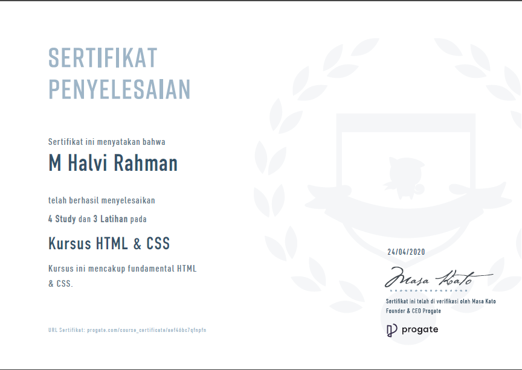
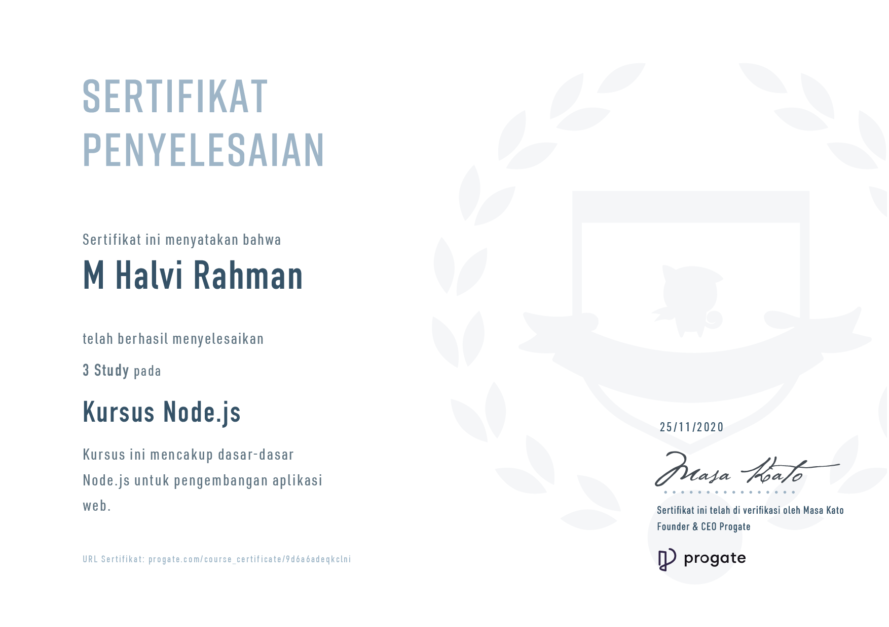
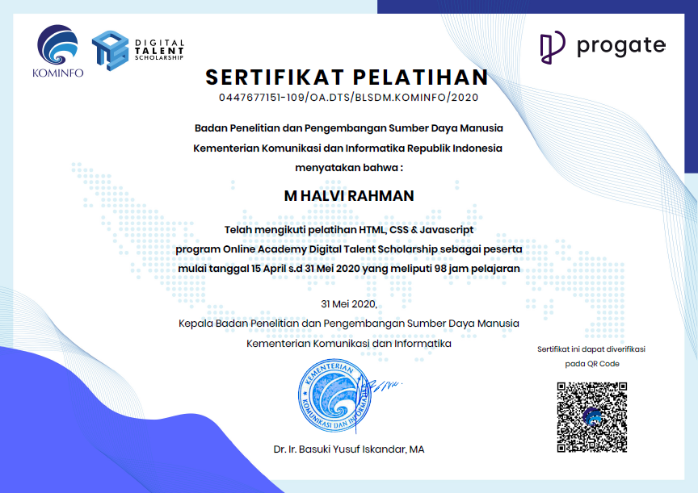

Nama : M Halvi Rahman
NIM : 19650128
TTL : Surabaya, 29 September 2001
Alamat : Jombang
Jurusan : Teknik Informatika
Fakultas: Sains dan Teknologi
SD : SDN Wringinpitu
SMP : SMP Negeri 2 Mojoagung
SMA : SMA Negeri Bareng
1. Pelatihan Digital Talent Scholarship KOMINFO
2. DQ Lab - Data Analyst
3. Progate - HTML & CSS, Javascript
| Hari | Jam | Kelas | Mata Kuliah | Nama Dosen |
|---|---|---|---|---|
| Senin | 06.30 - 08.10 | A | Praktikum Grafika Komputer | JUNIARDI NUR FADILA,M.T. |
| Senin | 09.00 - 11.30 | F | Jaringan Komputer | JOHAN ERICKA WAHYU PRAKASA,M.Kom |
| Selasa | 06.30 - 08.10 | A | Praktikum Pemrograman Web | AGUNG TEGUH WIBOWO ALMAIS, S.Kom, M.T. |
| Selasa | 08.10 - 09.50 | D | Metode Numerik | OKTA QOMARUDDIN AZIZ,S.Si., M.Kom |
| Selasa | 09.50 - 11.30 | C | Praktikum Jaringan Komputer | JOHAN ERICKA WAHYU PRAKASA,M.Kom |
| Rabu | 06.30 - 08.10 | A | Praktikum Rekayasa Perangkat Lunak | SUPRIYONO,M.Kom |
| Rabu | 08.10 - 09.50 | B | Grafika Komputer | FRESSY NUGROHO, M.T. |
| Rabu | 09.50 - 11.30 | F | Studi Al-Quran dan Al-Hadits | M. IMAMUDDIN,M.A |
| Kamis | 06.30 - 09.00 | C | Bahasa Inggris II | ROCHMAWATI,S.S., M.Pd |
| Kamis | 09.00 - 11.30 | B | Rekayasa Perangkat Lunak | MUHAMMAD AINUL YAQIN, M.Kom |
| Jum'at | 06.30 - 09.00 | C | Pemrograman Web | A'LA SYAUQI,M.Kom |
| Jum'at | 09.00 - 10.40 | C | Teosofi | KHOLID ZAMZAMI, M.Si |
1. Orda IMJ (Ikatan Mahasiswa Jombang)
2. Relawan Mahasiswa Pembuat Alat Kabut Anti Virus (KAVi)
1. Sertifikat Penyelesaian Kursus HTML dan CSS | Progate
2. Sertifikat Penyelesaian Kursus Node.js | Progate
3. Sertifikat Pelatihan HTML, CSS & Javascript program Online Academy Digital Talent Scholarship
